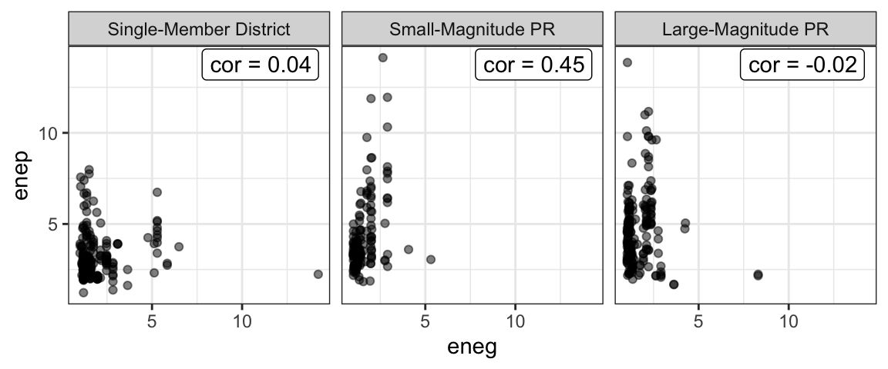
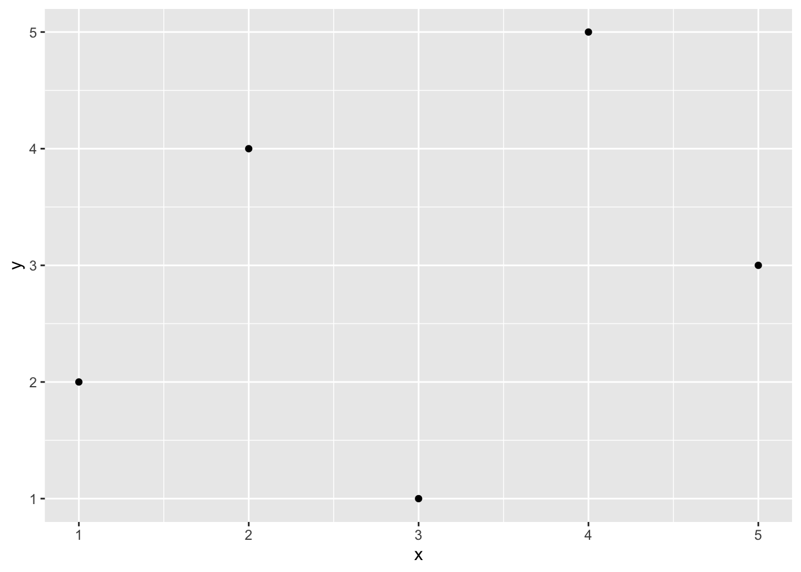
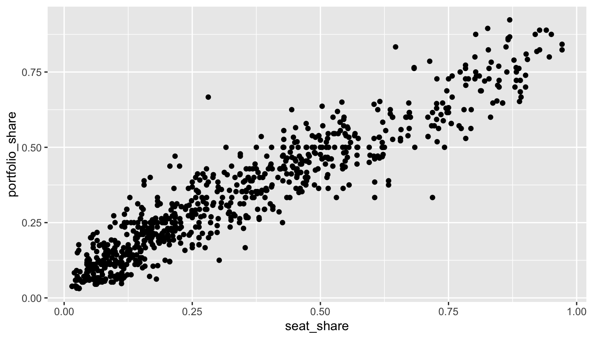
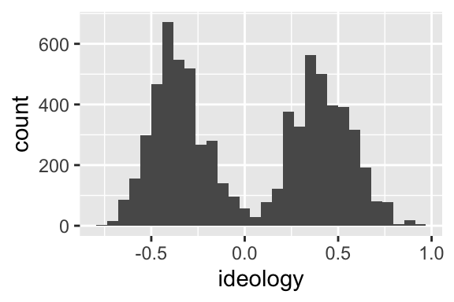

Chapter 3 The Normal Model
3.1 The Intuition
Last week, we used the average and SD to reduce and entire variable to two summaries. We use the average and SD to fill in the following sentence: “The values are about ________, give or take ________ or so.”
This week, we add an additional assumption. This week, we also say that the histogram of the variable follows the normal curve. The normal curve is a bell-shaped curve with a particular equation. There are two varieties. There is a general, parameterized normal distibution that can move left and right (i.e., change location) and grow wider or taller (i.e., change scale)
3.2 The Normal Curve(s)
There are two particular normal curves that we care about
- the normal curve, which has a location and scale parameter that we can specify: \(f(x | \mu, \sigma) = \phi(x | \mu, \sigma) = \frac{1}{{\sigma \sqrt {2\pi } }}e^\frac{{ - \left( {x - \mu } \right)^2 }}{2\sigma ^2 }\)
- the standard normal curve, with the location and scale parameters fixed: \(f(x | \mu = 0, \sigma = 1) = \phi(x | \mu = 0, \sigma = 1) = \frac{1}{{\sqrt {2\pi } }}e^\frac{{ - x ^2 }}{2}\)
These equations are complicated. Instead of memorizing them or working carefully through the math, just understand (for now) that the normal curve has an equation that exactly characterizes it. The figure below shows the standard normal curve (\(\mu = 0\) and \(\sigma = 1\)) and several other paramaterizations.

3.3 The Empirical Rule
It turns out that many variable’s have a histogram that resembles the normal curve. Because of this, the normal curve can sometimes serve as an effective model for these variables.
For example, NOMINATE ideology scores for Republicans in the 115th Congress roughly follow the normal curve.
df <- read_rds("data/nominate.rds") %>%
filter(party == "Democrat", congress == 115)
ggplot(df, aes(x = ideology)) +
geom_histogram() 
However, the ideology scores for both Republicans and Democrats together does not follow a normal curve.

The histograms of ENEP by electoral system and social heterogeneity deviate slightly from the normal curve.
## Observations: 1,161
## Variables: 4
## $ x <dbl> 1.23, 1.33, 1.43, 1.53, 1.63, 1.73, 1.83, 1…
## $ density <dbl> 0.02616495, 0.02960818, 0.03338541, 0.03751…
## $ electoral_system <fct> Large-Magnitude PR, Large-Magnitude PR, Lar…
## $ social_heterogeneity <fct> Bottom 3rd of ENEG, Bottom 3rd of ENEG, Bot…
If the variable seems to follow the normal curve, then we have the following rules:
- About 68% of the data (i.e., “most”) fall within 1 SD of the average.
- About 95% of the data (i.e., “almost all”) fall within 2 SDs of the average.
We can evaluate this rule with the parties data above. Some of the nine hisgrams follow the normal curve quite well (e.g., lower-left). Other’s seem to meaningfully deviate from the normal curve (e.g., middle-left).
The table below shows the actual percent of the variable that falls within one and two SDs of the average for each histogram. As you can see, for the lower-left panel (SMD, Top 3rd), the empircal rule of 68% and 95% matches the actual values of 74% and 98% fairly well. For the middle-left panel (SMD, Middle 3rd), the empirical rule matches the actual values of 87% and 93% less well.
Across all histograms, it seems fair that the empirical rule works as a rough approximation, even for histograms that meaningfully deviate from the normal curve.
| Electoral System | Social Heterogeneity | within 1 SD | within 2 SDs |
|---|---|---|---|
| Single-Member District | Bottom 3rd of ENEG | 87% | 96% |
| Single-Member District | Middle 3rd of ENEG | 87% | 93% |
| Single-Member District | Top 3rd of ENEG | 74% | 98% |
| Small-Magnitude PR | Bottom 3rd of ENEG | 68% | 97% |
| Small-Magnitude PR | Middle 3rd of ENEG | 73% | 96% |
| Small-Magnitude PR | Top 3rd of ENEG | 76% | 93% |
| Large-Magnitude PR | Bottom 3rd of ENEG | 80% | 98% |
| Large-Magnitude PR | Middle 3rd of ENEG | 77% | 96% |
| Large-Magnitude PR | Top 3rd of ENEG | 65% | 97% |
3.4 The Normal Approximation
If our normal model summarizes a histogram well, then we can use the model to estimate the percent of the observations that fall in a given range. There are two approaches:
Just like we add up the area of the bars to compute percentages with a histogram, we add up the area under the normal curve to approximate percentages.
- Use a normal table from a textbook. Because the table is for the standard normal curve, we need to re-locate and re-scale the data to fit the standard normal curve.
- Use the
pnorm()function in R. Because this function is parameterized with location and scale, we can simple re-locate and re-scale the curve to fit the data.
3.4.1 Normal Table
Normal tables offer an antiquated method to use the normal distribution to approximate percentages. Because we cannot have a normal table for all possible locations and scales, we have one: the standard normal table, which works for a variable with an average of zero and an SD of one.
This seems limiting, but it turns out that we can easily re-locate and re-scale any value to match the standard normal curve. We simply subtract the average and divide by the SD. We call this new value a z-score.
\(z\text{-score} = \dfrac{\text{value} - \text{average}}{\text{SD}}\)
FSuppose we have the list \(X = \{1, 2, 3, 4, 5\}\). Then the average is 3, and the SD is about 1.26. We can compute the zscore for the first entry 1 as \(\frac{1 - 3}{1.25} \approx -1.58\). Similarly, we can convert the entire list to z-scores and get \(Z = \{1.59, -0.79, 0.00, 0.79, 1.59\}\). If you compute the average and SD of the list \(Z\), you will find zero and one, respectively.
We can then use a normal table to compute areas under the normal curve between (or above or below) these values of \(z\). There are two types of normal tables.
- Some tables report the percent (or proportion) of the normal curve below a particular value \(z\).
- Other tables report the percent (or proportion) of the normal curve between a particular value \(z\) and \(-z\). (The normal table on p. A-104 of FPP works this way.)

Either table works, but you must know what type of table you are working with. Depending on the question, one type might offer a more direct solution.
Here’s a small normal table for a few values of \(z\) that uses both approaches.
| z | % less than z | % between -z and z | Status |
|---|---|---|---|
| 0.00 | 50% | 0% | |
| 0.10 | 54% | 8% | |
| 0.20 | 58% | 16% | |
| 0.30 | 62% | 24% | |
| 0.40 | 66% | 31% | |
| 0.50 | 69% | 38% | |
| 0.75 | 77% | 55% | |
| 1.00 | 84% | 68% | Important |
| 1.50 | 93% | 87% | |
| 1.64 | 95% | 90% | Important |
| 1.96 | 98% | 95% | Important |
| 2.00 | 98% | 95% | Important |
| 3.00 | 100% | 100% |
In order to use the table to find the area between any two values, you need to use the following three rules in combination.
- The normal table gives the area (i) below \(z\) or (ii) between \(-z\) and \(z\).
- The area under the entire normal curve is 1 or 100%.
- The normal curve is symetric, so that the area to the right of \(z\) equals the area to the left of \(-z\).
3.4.2 pnorm()
The pnorm() function in R return the area under the normal curve less than \(z\). By default, it uses the standard normal curve, but you can specify a mean and sd if you prefer to re-locate and/or re-scale the curve to fit your values.
## [1] 0.8413447# area under the a normal curve (with average of 1 and SD of 4) less than 1
pnorm(1, mean = 1, sd = 4)## [1] 0.5## [1] 0.89899483.4.3 Exactly Percentages
To actually compute percentages, we can create a function that works just like pnorm(), but it returns the percent of the data that fall below a particular value. The most convenient method is to create an "empirical cumulative distribution function*.
This function is somewhat confusing. The ecdf() function does not return the proportion below its argument. Instead, it creates a function that returns the percent below its argument. If we have a numeric vector x, then ecdf(x) is a function! Let that settle in… both ecdf and ecdf(x) are function. The function ecdf (I’m dropping the () for clarity) is a function that creates a function, and ecdf(x)() (I’m including the (), as usual, for clarity) is a function that returns the percent below.
df <- read_rds("data/nominate.rds") %>%
filter(party == "Democrat", congress == 115)
# normal approximation for % of Democrats less than -0.05
avg <- mean(df$ideology)
sd <- sd(df$ideology)
pnorm(-0.5, mean = avg, sd = sd)## [1] 0.1731597## [1] 0.1479592We can also plot the ECDF with ggplot2.

3.5 Review Exercises
The plot below show the histograms for the ideology of legislators in the U.S. House by party.

We can compute the average and SD by party.
| Party | Average | SD |
|---|---|---|
| Democrat | -0.39 | 0.12 |
| Republican | 0.49 | 0.15 |
The table below lists some of the leaders of each party and their ideology score. For each leader, use our three approaches to compute the percent of the party that is “more extreme” than their leader: inspect the histogram, use the normal approximation, and use R to compute the answer exactly.
| Name | Party | Position | Ideology Score | Inspect Histogram | Normal Approximation | Actual |
|---|---|---|---|---|---|---|
| RYAN, Paul D. | Republican | Speaker of the House | 0.56 | |||
| MCCARTHY, Kevin | Republican | Majority Leader | 0.46 | |||
| SCALISE, Steve | Republican | Majority Whip | 0.56 | |||
| McMORRIS RODGERS, Cathy | Republican | Conference Chair | 0.43 | |||
| PELOSI, Nancy | Democrat | Minority Leader | -0.49 | |||
| HOYER, Steny Hamilton | Democrat | Minority Whip | -0.38 | |||
| CLYBURN, James Enos | Democrat | Assistant Democratic Leader | -0.46 | |||
| LEWIS, John R. | Democrat | Senior Chief Deputy Minority Whip | -0.59 |